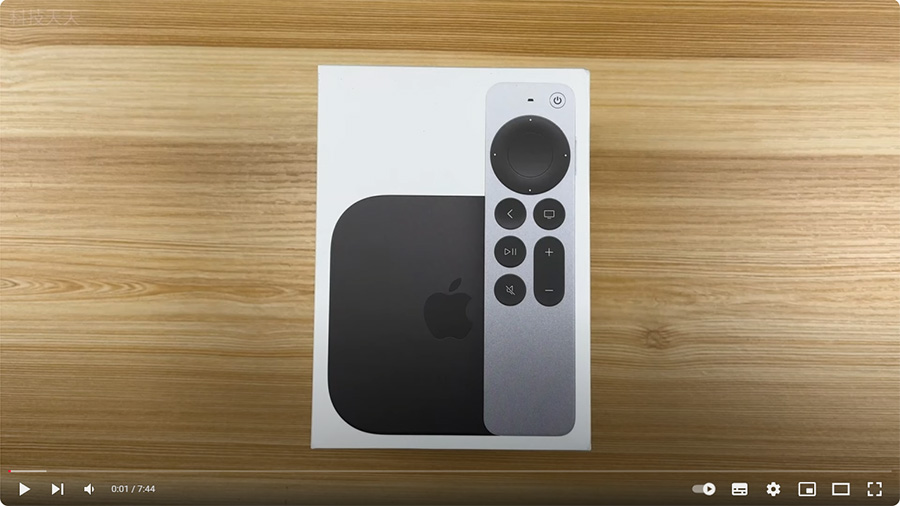

Apple TV 4K 开箱：https://youtu.be/f6jwFyqbMy8
Apple TV 4K 2022 开箱、评测、激活以及在国内使用方法。新款采用了A15处理器性能和功能非常强大。
Apple TV 4K 全面介绍
Apple TV 4K 是苹果推出的高端电视机顶盒产品，可将视频流媒体、游戏、应用及智能家居控制统一在电视大屏上，与 Apple 生态无缝结合。
高清/4K 电视内容流媒体播放终端
不仅是视频播放，还支持：
高清内容播放（Netflix / YouTube / Disney+ 等）
Apple TV+ 原创内容
游戏 / Apple Arcade
AirPlay 投屏
HomeKit 设备控制
Dolby Atmos / Dolby Vision 高画质音效
核心亮点
🔥 1. 原生 4K HDR 支持
支持：
4K 分辨率（3840×2160）
HDR10
Dolby Vision
带来更高亮度和更丰富色彩。
🎧 2. 杜比全景声 & 空间音频
支持：
Dolby Atmos
配合支持 Atmos 的内容和音响系统，声场更立体。
Apple 生态一体化
✨ AirPlay
从 iPhone / iPad / Mac 投屏到电视：
✔ 照片
✔ 视频
✔ 音乐
✔ 游戏画面
内置主流流媒体应用
包含：
Netflix
YouTube
Disney+
Amazon Prime Video
Apple TV+
腾讯视频 / 爱奇艺（部分地区可用）
（部分应用可能因地区限制不可用）
在大陆使用激活时，建议通过iPhone/iPad连接激活，更方便，当然也可通过遥控器操作激活，总体很简单。
